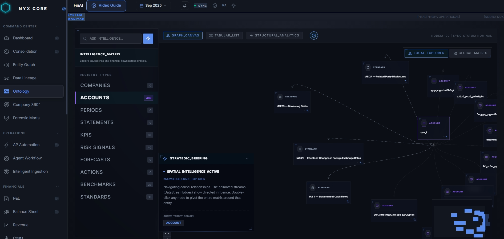

Eight interconnected modules working together to transform raw data into strategic decisions
Eight interconnected modules working together to transform raw data into strategic decisions with full auditability.
Command Center
Centralized operations, system health, and decision orchestration.
Sovereign Strategic
Executive-grade dashboards that present trusted outcomes and verified audit trails.
Operational Data
End-to-end financial traceability from ERP ingestion to consolidated output.
Vector Intelligence
2,344+ embeddings in ChromaDB for semantic search, similarity matching, and contextual retrieval.

Agent Workflow
Composable AI workflows coordinate reasoning, simulation, and validation between human operators and autonomous agents.

Sub-Ledger Analysis
Deep ledger inspection with AP/AR, inventory, fixed assets, and profitability.
Financial Ontology
Knowledge graph explorer linking accounts, IFRS standards, and entity relationships.

Data Warehouse
Pre-built analytics, AI data agent, and natural language query access.